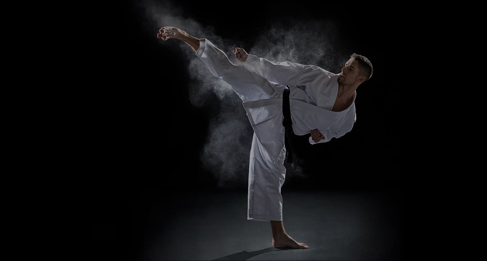
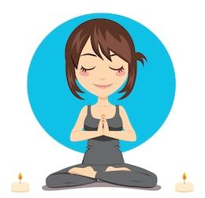

PHYSICAL FITNESS
We all have to start somewhere, and doing something is better than nothing at all. Start small so you don't get discouraged and give up. Remember it is all about consistency.Physical fitness is a state of health and well-being and, more specifically, the ability to perform aspects of sports, occupations and daily activities.
-

MARTIAL ART
Karate is a martial art developed in the Ryukyu Kingdom. It developed from the indigenous Ryukyuan martial arts under the influence of Chinese Kung Fu, particularly Fujian White Crane. Karate is now predominantly a striking art using punching, kicking, knee strikes, elbow strikes and open-hand techniques such as knife-hands, spear-hands and palm-heel strikes.
-

YOGA
yoga is an ancient art based on a harmonizing system of development for the body, mind, and spirit. The continued practice of yoga will lead you to a sense of peace and well-being, and also a feeling of being at one with their environment. This is a simple definition.
KNOWLEDGE SKILLS AND HARD WORK
Physical fitness is a state of health and well-being and, more specifically, the ability to perform aspects of sports, occupations and daily activities. Physical fitness is generally achieved through proper nutrition, moderate-vigorous physical exercise, and sufficient rest.
CONTACT US
navurana5@gmail.com
ABOUT OUR CAMP
Summer camp is a special type of community where kids come together to have fun. Within the camp setting, children develop a sense of independence as they try new adventures away from home. Summer camps are known for providing a safe environment where children gain self-confidence as they learn new skills.